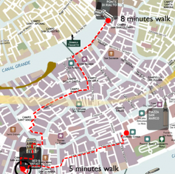

As you can see it is only 5 minutes from Piazza San Marco and 8 minutes from the Rialto bridge. Plus, prices were very reasonable, the breakfast was delicious, the owners very gracious and it is thanks to them that I was able to make one of my long wished dreams come true: walking in the water during the high tide, because they lent me and my daughter a pair of rain boots! Now, how can you beat this??How much is your time worth? Staying (and walking) in Venice
If you have read our eBook Italy from the Inside you probably know that our goal is to give practical tips and insights about your vacation in Italy. We don't really deal with places to stay and/or see, because there are already many wonderful guides out there that can provide this kind of information. This time, however, we will make a little exception, due to the fact that we are going to talk about how much is it worth staying closer to the heart of Venice (and maybe spending a little more money) versus staying in the outskirts.
One of the best things that can happen to you as a tourist in Venice is... getting lost. Walking in Venice is such a great experience because each calle (pedestrian street) is different and it may lead you to a bridge (ponte), a church (chiesa), an interesting store and so one. However, walking in Venice may be also exhausting, especially if you visit it during summer time. I still remember when I was a student and I used to do some research at the Biblioteca Marciana in Piazza San Marco; I always underestimated the time it takes to walk from Saint Mark's Square to the train station (if you wonder: it was a 25 minutes fast/anxious/"oh my God, I'll miss the train" walk).
When two years ago we decided to spend a couple of days in Venice I had no doubts: I wanted to stay as close as possible to the center. So, I went online and found the Bed and Breakfast Zaguri which is in a super-duper convenient location: